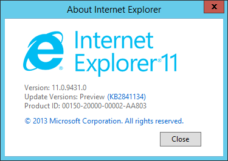
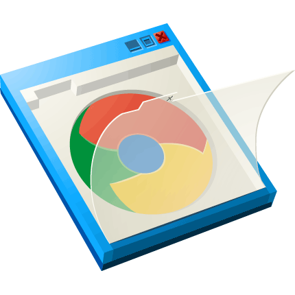
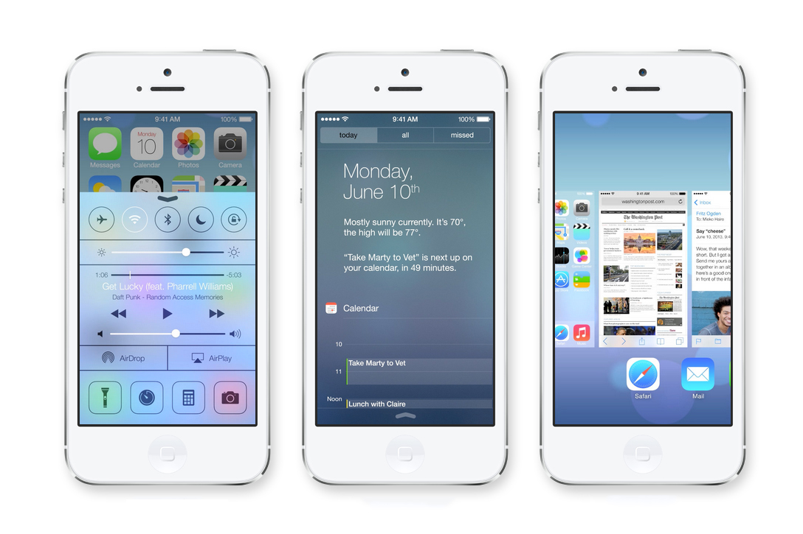
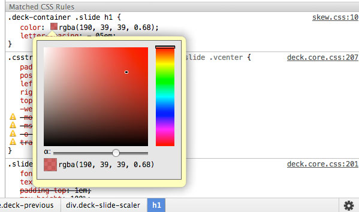

— Brian Moeskau (@bmoeskau)
— Kyle Samani, CEO of Pristine
Consists of multiple specs:
HTML Templates
+
Custom Elements
+
HTML Imports
+
Shadow DOM
+
Decorators (?)
Document fragments which are unused by the document when loaded, but are parsed as HTML and are available at runtime for use by the web page.
// HTML:
<template id="comment-template">
<img class="avatar" src="">
<div class="comment-text"></div>
</template>
// JS:
var comment = document
.querySelector("#commentTemplate")
.content.cloneNode(true);
Describes the method for enabling the author to define and use new types of DOM elements in a document.
<my-thing>Cool!</my-thing>HTML documents that are linked as external resources from another HTML document. The document that links to an import is called a master document.
<link rel="import" href="/imports/another.html">Allows multiple DOM trees...to be composed into one larger tree when rendered. These shadow trees...establish encapsulation boundaries while retaining standard DOM composability semantics.
<shadow-root>...</shadow-root>Something that enhances or overrides the presentation of an existing element.
Concept only, no official spec yet
// HTML:
<decorator id="details-open">
<template>
<p>Open: <content></content></p>
</template>
</decorator>
// CSS:
details[open] {
decorator: url(#details-open);
}Handle console gamepad events via JS
Working draft status
Implemented in Chrome & FF dev channels
ZTE Open smartphone launched in Spain TODAY!
Initial focus on emerging markets
Adaptive app search will "transform [the device]
to fit a user’s needs at any moment."
"First devices powered completely
by Web technologies"
Coming in Windows 8.1
WebGL!
New console / debugging tools
Support for SPDY
Awesome plugin that modernizes old IE
Google is retiring it in January 2014
Coming "this Fall"
Published by Facebook last month
"Composite Components"
Declarative markup & events
Bi-directional data binding
Plays nicely with other libs (jQuery, Bootstrap, etc.)
With React, you *never* generate strings. Instead, you construct a tree of lightweight objects that represent HTML elements and subcomponents that make up your component. This tree of objects is eventually serialized to HTML.
The Web Components spec is still years away.
Luckily (as usual) libraries are leading the way!
Some examples...
var Hello = React.createClass({
render: function() {
return <div>Hello {this.props.name}</div>;
}
});
React.renderComponent(
<Hello name="World" />, document.body
);<label>Name:</label>
<input type="text" ng-model="yourName"
placeholder="Enter a name here">
<h1>Hello {{yourName}}!</h1>App.ApplicationController =
Ember.Controller.extend({
firstName: "Brian",
lastName: "Moeskau"
});
<p>Hello, {{firstName}} {{lastName}}!</p>Fri-Sat, July 12-13 ($20)
Fri-Sat, July 19-20 ($300)
Mon, July 29, 6-9pm ($15)
Mon-Tue, Sept 30-Oct 1 ($945 through Aug 5)
Thu, October 10, 5-10pm (free)
...that Chrome's style inspector has an awesome built-in color picker?

/
#